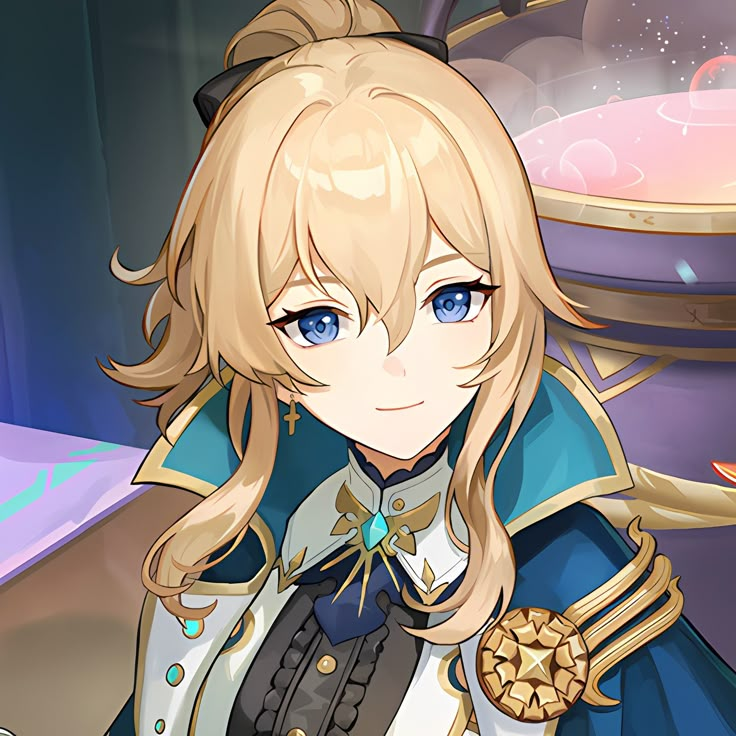
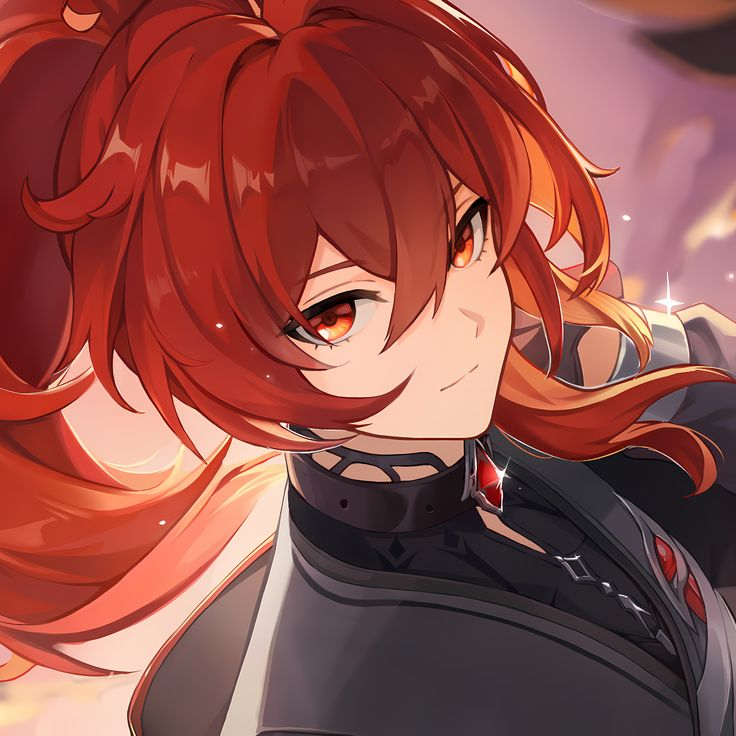
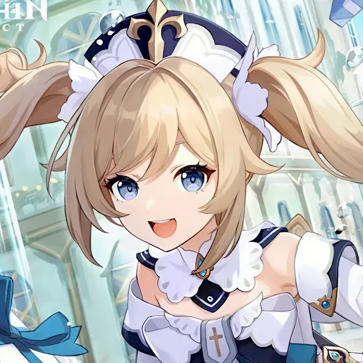

Мысли персонажей о Варке.
Джинн:

«Магистр Варка – легенда своего поколения. В день его триумфального возвращения я обязательно представлю тебя ему. Уверена, что ты тоже будешь в восторге от его величия».
Дилюк:

«Магистр Варка... Я понимаю его позицию, но его действия я одобрить не могу... Я сказал слишком много... Я уже давно покинул орден. Забудь, что я сказал».
Барбара:

«Мой отец уехал в экспедицию вместе с магистром Варкой... Надеюсь, с ними все в порядке. Ох, о чем я беспокоюсь? Магистр ордена – не кто иной, как Рыцарь Бореалис! Конечно, с ними все будет хорошо! Но, как бы то ни было, я обязательно буду молиться об их благополучном возвращении».